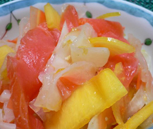

スモークサーモン入りの
柿なます
柿なます
- 調理時間：30 分
- （一人当たり）
- カロリー：75kcal
- たんぱく質：3.6g
- 脂質：0.7g
- 塩分：1.1g


＜４人分＞
- 大根
- １０～１５ｃｍ
- 人参
- １／３本
- 柿
- １／２個
- スモークサーモン
- ５０ｇ
- 塩
- 適量
合わせ酢
- ・酢（ユズと合わせてもよい）
- 大さじ３
- ・三温糖
- 大さじ１
- ・塩
- 小さじ１／２
- ・白ゴマ
- 少々


- 大根、人参は皮をむき、短冊に切り、塩をふってしんなりさせる。
柿も大きさをそろえて短冊切りにする。 - スモークサーモンは食べやすい大きさに切る。
- 合わせ酢をつくる。
- 大根、人参の水分をギュッとしぼり、柿とサーモンを一緒に合わせ酢で和える。
スモークサーモン入りの柿なます
生で、煮て、漬けて、干して、大根はどんな調理法でも重宝され、まさに万能役者。毎日毎食でも積極的に食べたい食材のひとつでしょう。
ご存じのとおり、大根の根の部分は、ビタミンＣや消化を助けるジアスターゼなどの酵素が豊富。辛みの成分は、胃液の分泌を促し、腸の働きをととのえます。
合わせた柿には肝機能を助け、血管を丈夫にするはたらきがあります。さらに、カリウムが豊富で利尿作用があるため、血圧降下作用があり高血圧予防にも有効。ただし、カリウムのはたらきで摂り過ぎると体を冷やしてしまうのですが、料理に使えば食べ過ぎることもありません。
一度つくれば、２、３日保存できますので小鉢料理におすすめの一品です。